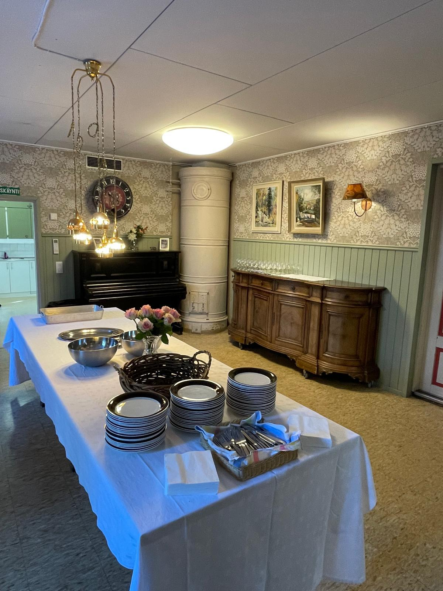
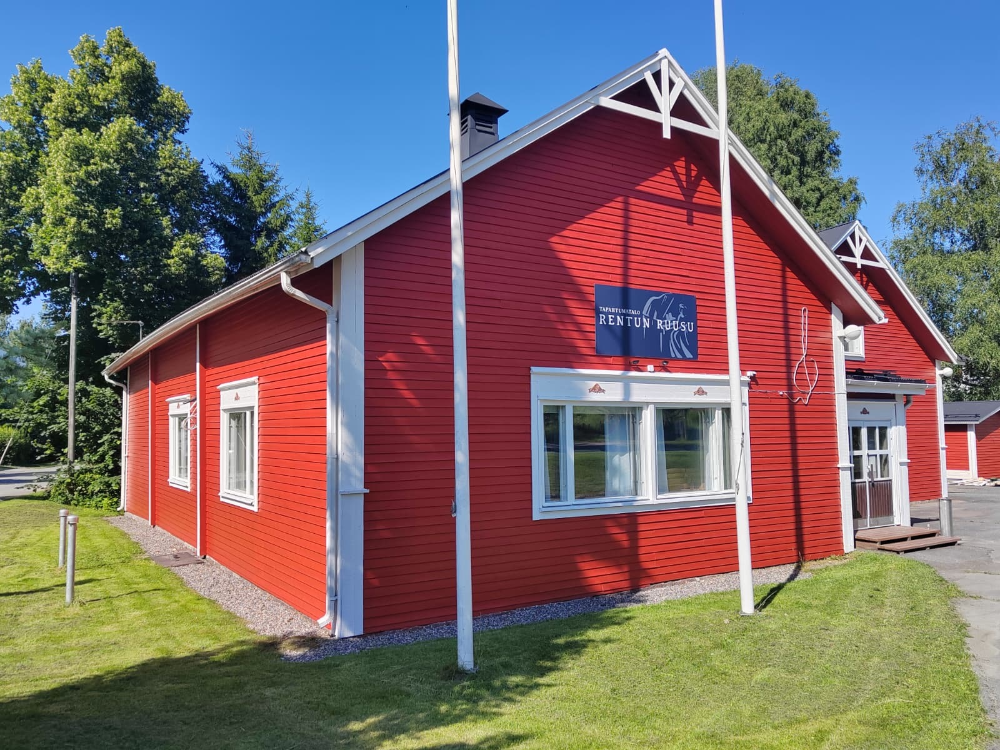
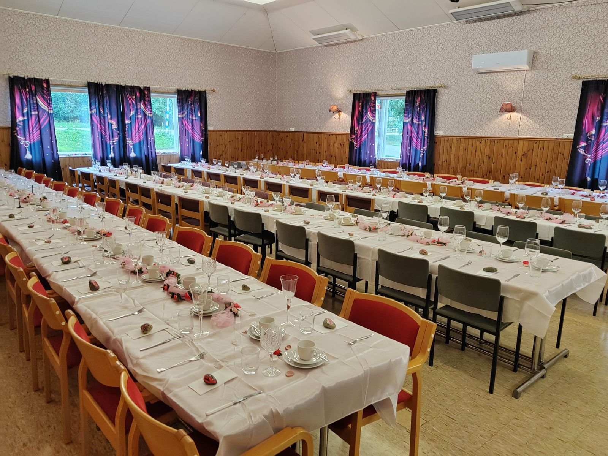
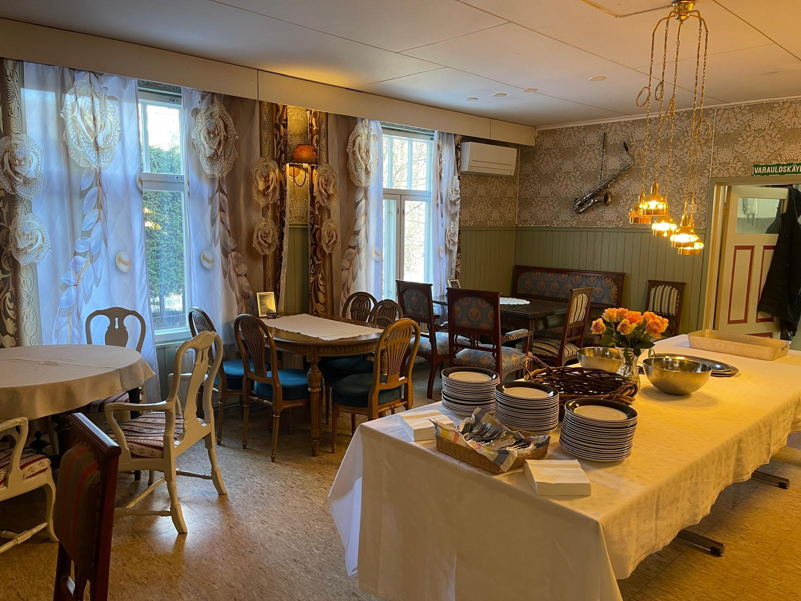
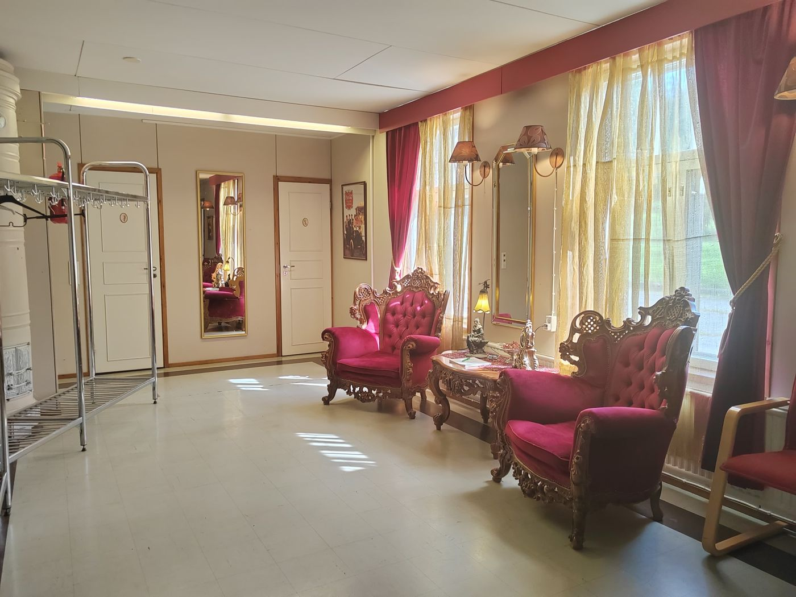

juhla- ja tapahtumatalo · turenki
Juhlat kuin ennen vanhaan.
Punainen puutalo Kauppakujalla, jossa vanha piano soi ja pitkät pöydät katetaan valkein puuvillaliinoin. Häihin, syntymäpäiviin, rippijuhliin jne.
tervetuloa taloon
Tapahtumatalo, missä juhlista tulee erikoisia
Rentun Ruusu on turenkilainen juhla- ja tapahtumatalo, jonka jokainen huone kertoo tarinaa: salissa on oikea näyttämö samettiverhoineen, Pianotuvassa vanha piano ja kaakeliuuni, aulassa punasamettiset nojatuolit.
Vuokraamme tiloja yksityisjuhliin — pienistä kahvihetkistä koko talon juhliin.
- Juhlasali pitkine pöytineen ja näyttämöineen
- Tunnelmallinen vintage-kahvila. Pianotupa
- Täysi keittiö tarjoiluja varten
- Oma piha ja hyvät parkkitilat vieressä


tilat
Kolme tunnelmaa saman katon alla

Juhlasali
Pitkät pöydät, oma näyttämö ja samettiesirippu — tanssit, häät ja suuret juhlat.
katso kuvat ✦
Pianotupa
Pitsiverhot, vanha piano ja seinäkello — rippijuhlat, valmistujaiset ja pienet seurueet.
katso kuvat ✦
Aula & keittiö
Samettituolit vastaanottoon ja täysi keittiö omille tai pitopalvelun tarjoiluille.
katso kuvat ✦varaukset
Haluaisitko ruusun poskille?
Kerro millaisia juhlia suunnittelet, niin laitamme pöydät ja tuolit valmiiksi. Sali, kahvila ja keittiö taipuvat niin häihin, merkkipäiviin kuin pikkujouluihinkin.
hyvä tietää
Kysymyksiä & vastauksia
Miten varaan tilat omiin juhliini?
Ota yhteyttä lomakkeella, sähköpostilla tai Instagramissa ja kerro toivottu päivä, vierasmäärä ja tilaisuuden luonne. Vastaamme nopeasti ja katsotaan yhdessä sopiva kokonaisuus.
Millaisiin tilaisuuksiin Rentun Ruusu sopii?
Häihin, syntymäpäiviin, muistotilaisuuksiin, pikkujouluihin, kokouksiin sekä tanssi- ja musiikki-iltoihin. Juhlasalin, kahvilan ja keittiön voi varata yhdessä tai erikseen.
Saako juhliin tuoda omat tarjoilut tai pitopalvelun?
Kyllä. Voit tuoda omat juomat ja tarjoilut tai käyttää valitsemaasi pitopalvelua.
Onko paikan päällä pysäköintiä?
Talon edessä on omat parkkipaikat, ja sisäänkäynti on pihan puolelta.
Voinko tulla tutustumaan tiloihin etukäteen?
Totta kai — sovi esittelyaika yhteydenottolomakkeella, niin keitetään pannu kahvia valmiiksi.